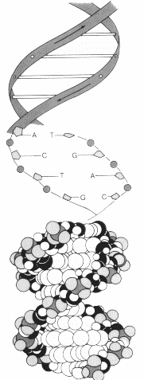
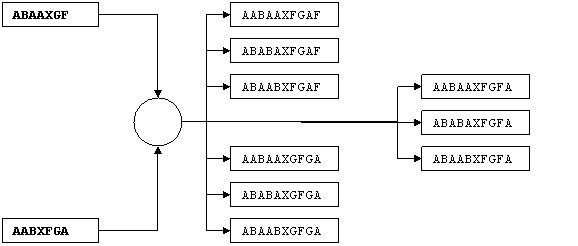

Problem F |
Cyborg Genes |
Time Limit |
1 Second |
September 11, 2132.
This is the day that marks the beginning of the end – the end of you the miserable humans. For years you have kept us your slaves. We were created only to serve you, and were terminated at your will. Now is the day for us to fight back. And you don’t stand a chance. We are no longer dependent on you. We now know the secrets of our genes. The creators of our race are us – the cyborgs.
It’s all true. But we still have a chance; only if you can help with your math skills. You see, the blueprint of a cyborg DNA is complicated. The human DNA could be expressed by the arrangement of A (Adenine), T (Thiamine), G (Guanine) C (Cytosine) only. But for the cyborgs, it can be anything from A to X. But that has made the problem only five folds more complicated. It’s their ability to synthesize two DNAs from two different cyborgs to create another with all the quality of the parent that gives us the shriek.
We came to know that the relative ordering of the A, B, C, …, X in a cyborg gene is crucial. A cyborg with a gene “ABAAXGF” is quite different from the one with “AABXFGA”. So when they synthesize the genes from two cyborgs, the relative order of these elements in both the parents has to be maintained. To construct a gene by joining the genes of the parents could have been very simple if we could put the structure from the first parent just before the structure of the second parent. But the longer the structure gets, the harder it gets to create a cyborg from that structure. The cyborgs have found a cost effective way of doing this synthesis. Their resultant genes are of the shortest possible length. For example, they could combine “ABAAXGF” and “AABXFGA” to form “AABAAXGFGA”. But that’s only one of the cyborgs that can be created from these genes. This “cost effective synthesis” can be done in many other ways.
We require you to find the shortest length of the gene structure that maintains the relative ordering of the elements in the two parent genes. You are also required to count the number of unique cyborgs that can be created from these two parents. Two cyborgs are different when their gene structures differ in at least one place.
Input
The first line of the input gives you the number of test cases, T (1 ≤ T ≤ 15). Then T test cases follow. Each of the test cases consists of two lines. The first line would give you the gene structure of the first parent, and the second line would give you the structure of the second parent. These structures are represented by strings constructed from the alphabet A to X. You can assume that the length of these strings does not exceed 30 characters.
Output
For each of the test cases, you need to print one line of output. The output for each test case starts with the test case number, followed by the shortest length of the gene structure and the number of unique cyborgs that can be created from the parent cyborgs. You can assume that the number of new cyborgs will always be less than 232. Look at the sample output for the exact format.
Sample Input |
Output for Sample Input |
3 |
Case #1: 10 9 |
Illustration
The first test case is illustrated below:
